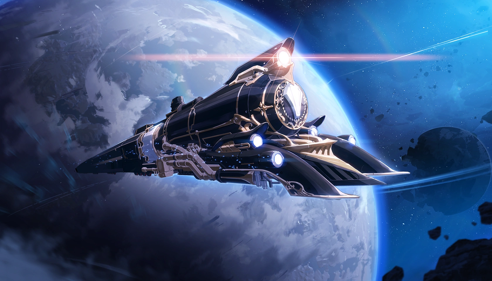

About The Express
The Astral Express,
The Heart of the Stars

Explore the Galaxy
Travel to breathtaking worlds, uncover ancient mysteries, and witness the wonders of the cosmos aboard the Astral Express. Adventure awaits beyond every star.
Forge Your Own Path
Your journey is unique, and the Astral Express is here to help you shape it. Face cosmic challenges, make bold choices, and leave your mark on the universe.
Build Lasting Friendships
The crew of the Astral Express isn’t just a team—they’re a family. Forge unbreakable bonds with fellow Trailblazers as you journey across the stars.